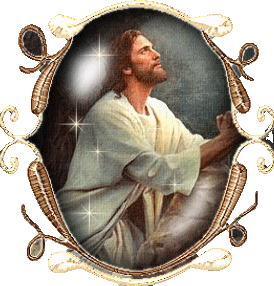

"PRELÚDIO"

E assim, diante do pecado que sempre crescia, na plenitude dos tempos, o CRIADOR decidiu agilizar o projeto DIVINO, enviando o SEU FILHO JESUS, para neutralizar a progressão do mal e deixar condições para que existisse a vida plena. NOSSO SENHOR veio, e realizou uma Obra magnífica. De maneira admirável ensinou ao povo o direito e a justiça, e através da SUA Palavra e dos SEUS exemplos mostrava a grandeza do SEU Infinito Amor por todos nós. JESUS foi preso, flagelado e morreu Crucificado, derramando o SEU Precioso e Sagrado Sangue sobre a humanidade de todas as gerações, purificando todos os pecados cometidos até aquele dia. E para que os “Frutos da Redenção” permanecessem em plena atividade, ELE também deixou sete preciosidades que são os “Sete Sacramentos”, que perdoa, purifica e limpa a alma das pessoas, revestindo-a de dons, virtudes e graças, fazendo desabrochar e manter a santidade pessoal. E como se tudo isto não fosse suficiente, JESUS, o FILHO DE DEUS, ainda deixou-nos SUA MÃE SANTÍSSIMA, para ser a “Nossa MÃE”, a fim de nos socorrer nas necessidades, protegendo e inspirando as nossas decisões, a fim de permanecermos santificados, cumprindo nossa missão existencial dignamente, rumo à eternidade feliz.
E de muitas maneiras a SANTÍSSIMA VIRGEM MARIA, MÃE DE JESUS e também NOSSA MÃE, tem se manifestado. Seja através das Aparições, seja revelando a SUA presença amorosa, em ações domésticas e em acontecimentos históricos. Significa afirmar que ELA é de fato nossa intercessora, nossa advogada, que defende a nossa existência, que nos protege das ciladas do maligno. Sobretudo, NOSSA SENHORA nos ampara e inspira as nossas buscas nas incertezas do quotidiano, sedimentando de maneira consistente a nossa fé na verdade revelada, durante os embates e acontecimentos do dia a dia.
Assim, MARIA, NOSSA SENHORA, SE tornou um Elo verdadeiro e funcional, que DEUS misericórdia infinita colocou na existência do mundo, em face das fraquezas, das inconstâncias e dos pecados que se multiplicam ao longo das gerações. Essa realidade nos faz compreender, que NOSSA MÃE SANTÍSSIMA é verdadeiramente a nossa preciosa e permanente “Medianeira” diante do SEU DIVINO FILHO JESUS, conseguindo DELE as Graças necessárias para cada um corrigir o rumo existencial, e também, para nos estimular a penitenciar os muitos pecados, e consolidar a nossa fé em DEUS, na TRINDADE SANTÍSSIMA, e na Verdade Cristã.
JESUS, SEU DIVINO FILHO, é nosso “Redentor e MEDIADOR por Excelência” diante do PAI ETERNO, pois com SUA Morte na Cruz derramou o SEU Sagrado Sangue sobre todos nós, lavando a alma de todas as gerações, apagando todos os pecados do mundo até aquele dia. Por isso mesmo, para que a SUA DIVINA OBRA ficasse completa, JESUS além daqueles mencionados meios eficazes, nos deixou a SUA QUERIDA E MUITO AMADA MÃE, para ser também a Nossa MÃE ESPIRITUAL.
Por isso, a função de NOSSA SENHORA, é DIVINA e UNIVERSAL. A SANTÍSSIMA VIRGEM MARIA, é verdadeiramente a “MÃE de toda Humanidade”. Primordialmente porque os pecados continuam a serem cometidos, e necessitam ser combatidos, com sacrifício, com amor e com o perdão. Também, por ser ELA, uma verdadeira e autêntica MÃE, inspirando e protegendo todos aqueles que buscam a SUA insubstituível proteção.
Estas explicações se tornam necessárias, porque neste Site além da “História de NOSSA SENHORA DE NAZARÉ”, vamos evidenciar considerações que atestam ser a MÃE DE JESUS a perfeita e amorosa MÃE DE TODOS NÓS, e, portanto, confirmar que MARIA, NOSSA SENHORA, é a nossa querida e amada MÃE DA IGREJA.
Nós do APOSTOLADO DOS SAGRADOS CORAÇÕES, com prazer oferecemos esta magnífica história de NOSSA SENHORA DE NAZARÉ, e de NOSSA SENHORA, NOSSA MÃE SANTÍSSIMA, A MÃE DA IGREJA. Sinceramente desejamos que os textos elaborados fossem agradáveis e particularmente instrutivos, proporcionando alegrias, surpresas e bem-estar a todos que acessarem este Site. Fraternalmente e com o maior carinho, desejamos a todos, a Paz do SENHOR JESUS.
“APOSTOLADO DOS SAGRADOS CORAÇÕES”
http://www.apostoladosagradoscoracoes.com.br